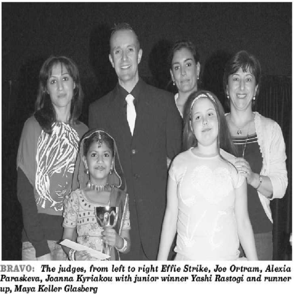

Maya Glasberg-Keller
I was born in Haifa, Israel, and attended middle school as part of the British school system in Cyprus, a small island in the Mediterranean with political ties to Greece, Turkey, and the UK. I moved to California during my first year of high school as a student of Connections Academy and, in Sophomore year, Saratoga High School. Now, I study Political Science/Administrative studies in the University of California Riverside as an Honors student with the intention of entering law school following my four years there. I have always been fascinated by the power of the written word, so I intend to work in contract law in the future and have already begun studying for the LSAT.
My work experience outside of school largely consists of editorial work, project supervision, and website administration, with some dabbling in voice acting. Unofficially, I have been editing family and friends’ important documents, such as job applications or requests for letters of recommendation, for better grammar, clarity, and conciseness since middle school, and I served as a literature analysis blog’s chief editor and second-in-command of the moderation team during my first to third years of high school. From Sophomore to Senior year, I joined the development team of an online publication as an editor, and though the project leader ultimately decided to cancel production due to personal conflicts with the art team, she made special note of an increase in the quality of the writing following my recruitment. During this time, I also provided some voice clips for a puzzle-solving Augmented Reality Game and ran a few of the minor clue-dispensing accounts; this project was more informal. In the summer of my Senior year, I interned at InReach Technologies, where I was tasked with cleaning up the grammar on their website and put in charge of editing an upcoming product’s user manual for readability. Though unofficial, I made some suggestions to clarify certain wording choices on a few of their legal documents, which I had read while cleaning up the site.
My extracurriculars that I would not count as proper jobs are largely musical in nature. I began performing in front of my class at age three, after requesting that the teacher let me do so during show and tell, and started receiving formal vocal lessons at age six. I took piano lessons through middle school and took part in several school productions as a singer and occasionally in an acting role, with one major performance as a pianist and singer. Outside of school, I was a member of a singing and dancing troupe which held shows biannually; our focus was on group numbers, but recognizing the extra hours I put in and my drive to do well, the troupe leader assigned me solos from my second year onwards. The first year that it was held, I won a prize at the troupe’s yearly talent show for my performance of A Whole New World, and at a later year, I was asked to contribute to a CD the troupe leader intended to use as advertisement for my performance of Defying Gravity. I took dance classes in addition to this, but my priority had always been vocals.
Experience
Editorial Internship
• Cleaned up the company website's grammar and syntax
• Edited an upcoming product's user manuel
• Experience with HTML, CSS, Javascript, Photoshop, Excel
General Editor
• Edited professional documentation for grammar, clarity, and syntax
• etc etc
Performer
• Performed group singing and dancing numbers
• Performed solo singing numbers
• Contributed to an advertisement CD
Education
University of California Riverside
Portfolio

.png)